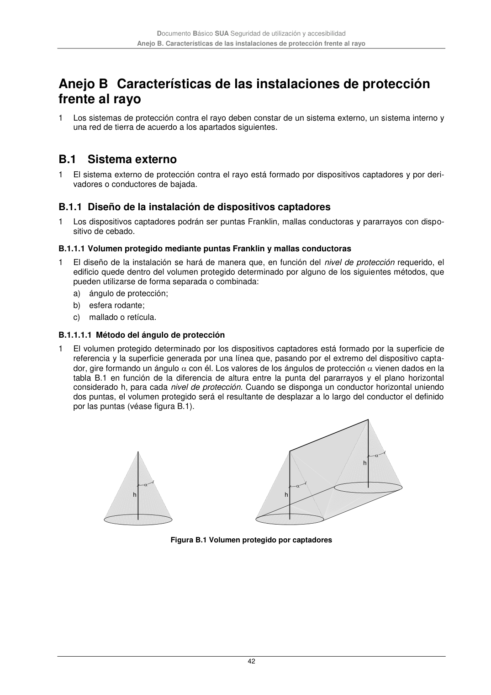
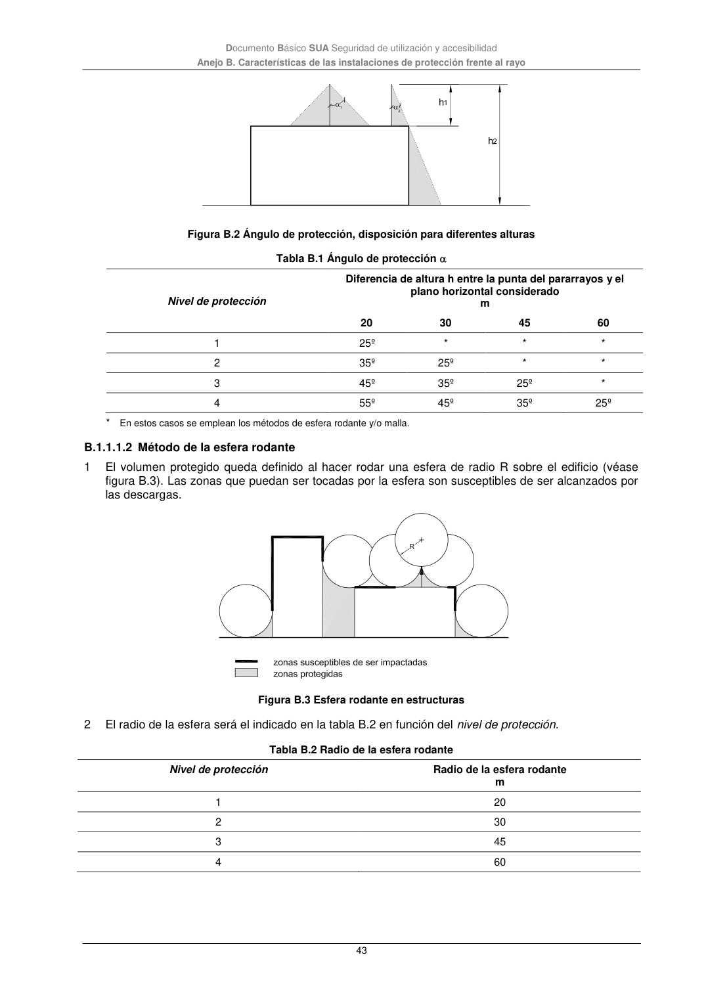

DB-SUA · B.1.1 Diseño de la instalación de dispositivos captadores · versión 2022-06-14 · capa oficial
Formatos: JSON compacto · Markdown · PDF fuente
Ámbito del documento · texto del ámbito · documento y tablas
ID técnico a0158 · PDF pág. 42-43 · jerarquía no validada por persona · contrastado con el literal de la página 42 (marcador PDF); no validado por persona · padre: a0157
B.1.1 Diseño de la instalación de dispositivos captadores 1 Los dispositivos captadores podrán ser puntas Franklin, mallas conductoras y pararrayos con dispo- sitivo de cebado. B.1.1.1 Volumen protegido mediante puntas Franklin y mallas conductoras 1 El diseño de la instalación se hará de manera que, en función del nivel de protección requerido, el edificio quede dentro del volumen protegido determinado por alguno de los siguientes métodos, que pueden utilizarse de forma separada o combinada: a) ángulo de protección; b) esfera rodante; c) mallado o retícula. B.1.1.1.1 Método del ángulo de protección 1 El volumen protegido determinado por los dispositivos captadores está formado por la superficie de referencia y la superficie generada por una línea que, pasando por el extremo del dispositivo capta- dor, gire formando un ángulo con él. Los valores de los ángulos de protección vienen dados en la tabla B.1 en función de la diferencia de altura entre la punta del pararrayos y el plano horizontal considerado h, para cada nivel de protección. Cuando se disponga un conductor horizontal uniendo dos puntas, el volumen protegido será el resultante de desplazar a lo largo del conductor el definido por las puntas (véase figura B.1). Figura B.1 Volumen protegido por captadores Documento Básico SUA Seguridad de utilización y accesibilidad Anejo B. Características de las instalaciones de protección frente al rayo 43 Figura B.2 Ángulo de protección, disposición para diferentes alturas Tabla B.1 Ángulo de protección Nivel de protección Diferencia de altura h entre la punta del pararrayos y el plano horizontal considerado m 20 30 45 60 1 25º * * * 2 35º 25º * * 3 45º 35º 25º * 4 55º 45º 35º 25º * En estos casos se emplean los métodos de esfera rodante y/o malla. B.1.1.1.2 Método de la esfera rodante 1 El volumen protegido queda definido al hacer rodar una esfera de radio R sobre el edificio (véase figura B.3). Las zonas que puedan ser tocadas por la esfera son susceptibles de ser alcanzados por las descargas. Figura B.3 Esfera rodante en estructuras 2 El radio de la esfera será el indicado en la tabla B.2 en función del nivel de protección. Tabla B.2 Radio de la esfera rodante Nivel de protección Radio de la esfera rodante m 1 20 2 30 3 45 4 60


PDF fuente redistribuible: copia fiel enlazada en esta página (SHA256 verificado).